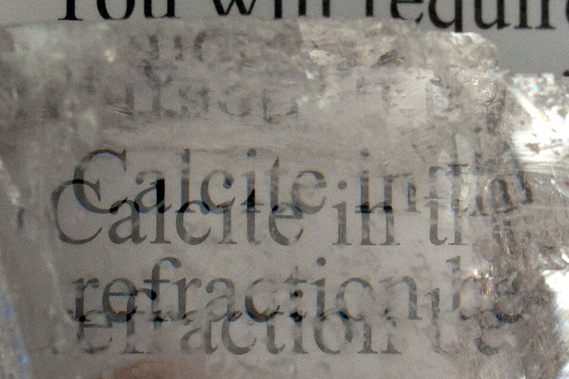
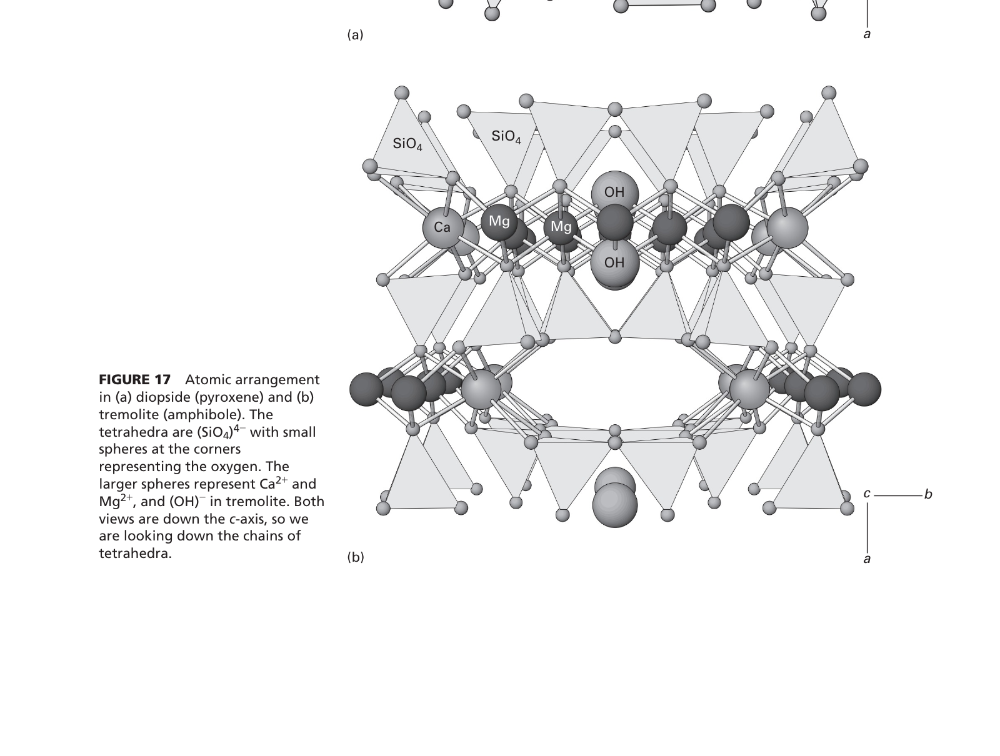
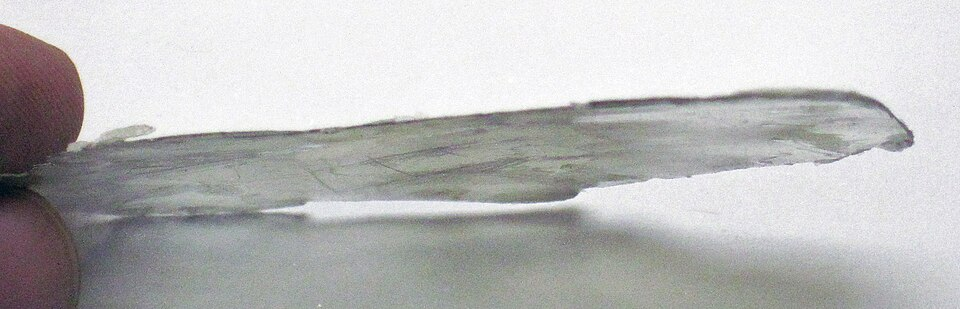
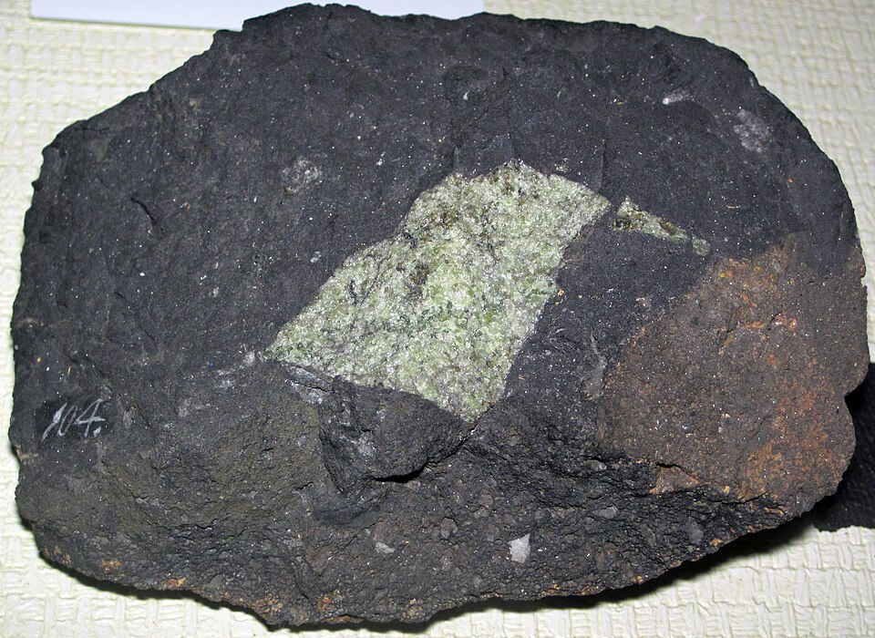
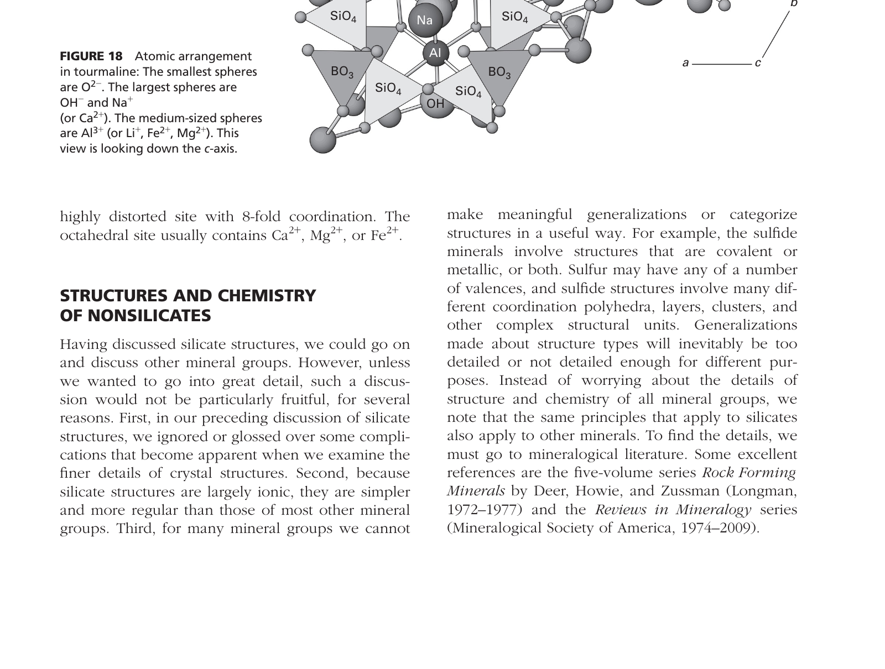
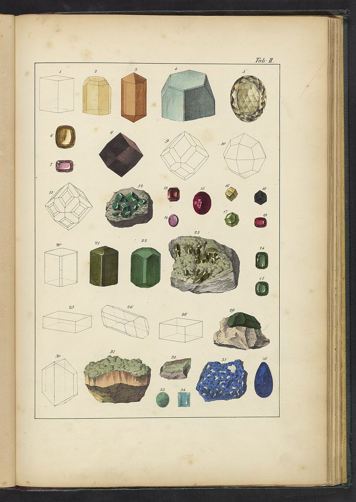

3.1 Introduction
A mineral is a naturally occurring, homogeneous inorganic solid substance possessing a definite chemical composition and an ordered internal atomic structure. Although over 2,000 mineral species are known, only about 20–30 rock-forming minerals make up over 98% of the Earth's continental crust (principally feldspars, quartz, pyroxenes, amphiboles, micas, olivine, and clay minerals).
3.2 Physical Properties of Minerals


Because each mineral has a fixed crystal structure and chemical composition, it exhibits diagnostic physical properties that allow rapid hand-specimen identification:
(i) Colour. Caused by selective absorption of light wavelengths. Trace impurities can produce wide colour variations in allochromatic minerals (e.g., smoky, rose, or amethyst quartz), whereas idiochromatic minerals have constant colour (e.g., brass-yellow pyrite, green malachite).
(ii) Streak. The colour of the fine powder obtained by rubbing a mineral across an unglazed porcelain streak plate. Streak is far more reliable than surface colour (e.g., hematite may look black or silver, but always gives a cherry-red streak).
(iii) Lustre. The appearance of a mineral surface in reflected light: Metallic (galena, pyrite) and Non-metallic—Vitreous (quartz), Pearly (talc, muscovite), Silky (asbestos, satin spar), Resinous (sphalerite), Adamantine (diamond), and Earthy (kaolin, bauxite).
(iv) Hardness (Mohs Scale). Resistance of a mineral to scratching, measured on Friedrich Mohs' relative scale from 1 to 10: 1. Talc, 2. Gypsum, 3. Calcite, 4. Fluorite, 5. Apatite, 6. Orthoclase, 7. Quartz, 8. Topaz, 9. Corundum, 10. Diamond. Field aids: fingernail ($2.5$), copper coin ($3.5$), penknife/glass ($5.5$), steel file ($6.5$).
(v) Cleavage & Fracture. Cleavage is the tendency of a crystal to split cleanly along parallel planes of weak atomic bonding (e.g., basal cleavage in mica, cubic 3-set in galena/halite, rhombohedral in calcite, $87^\circ/93^\circ$ in pyroxene vs. $56^\circ/124^\circ$ in amphibole). Minerals lacking cleavage break with an irregular Fracture: Conchoidal (curved shell-like in quartz), Uneven, Hackly (jagged in native copper), or Splintery.
(vi) Specific Gravity (G). The ratio of a mineral's weight to the weight of an equal volume of water. Common silicates average $2.6\text{--}3.3$, whereas metallic ores range from $4.2$ (chalcopyrite) to $7.5$ (galena).
3.5 Silicate Mineralogy and Crystal Chemistry



Silicates constitute over 90% of the Earth's crust and are classified into six structural subclasses based on how $(\text{SiO}_4)^{4-}$ tetrahedra link together: 1. Nesosilicates (isolated tetrahedra: Olivine, Garnet, Kyanite, Sillimanite, Andalusite), 2. Sorosilicates (double tetrahedra: Epidote), 3. Cyclosilicates (closed rings: Beryl, Tourmaline), 4. Inosilicates (single chains: Pyroxenes like Augite; double chains: Amphiboles like Hornblende), 5. Phyllosilicates (continuous sheets: Muscovite, Biotite, Talc, Chlorite, Kaolinite), and 6. Tectosilicates (3D frameworks: Quartz, Orthoclase, Plagioclase, Nepheline).
3.6 Common Rock-Forming & Ore Minerals



Quartz Group ($\text{SiO}_2$). Hardness 7, Sp. Gr. 2.65, hexagonal, conchoidal fracture, vitreous lustre. Essential constituent of granite, rhyolite, sandstone, and quartzite. Varieties include rock crystal, amethyst, smoky quartz, flint, chert, chalcedony, and agate.
Feldspar Group. The most abundant crustal minerals (~60% of igneous rocks). Two cleavages at or near $90^\circ$, $H=6$, $G=2.55\text{--}2.76$. Divided into Alkali Feldspars (Orthoclase and Microcline, $\text{KAlSi}_3\text{O}_8$) and the Plagioclase solid-solution series ranging from Albite ($\text{NaAlSi}_3\text{O}_8$) to Anorthite ($\text{CaAl}_2\text{Si}_2\text{O}_8$), distinguished by fine polysynthetic twinning striations.
Pyroxene & Amphibole Groups. Dark ferromagnesian silicates. Augite (pyroxene) forms stumpy 8-sided prisms with cleavage at $87^\circ/93^\circ$, whereas Hornblende (amphibole) forms elongated blades with $56^\circ/124^\circ$ cleavage.
Mica & Clay Groups. Characterized by 1 set of perfect basal cleavage yielding elastic sheets: white Muscovite (used as electrical insulator) and black Biotite. Alteration of feldspars yields soft hydrous aluminum silicates such as Kaolinite and Montmorillonite (expansive clay causing foundation swelling).
Carbonate & Sulfate Minerals. Calcite ($\text{CaCO}_3$, $H=3$, rhombohedral cleavage, brisk effervescence in cold dilute $\text{HCl}$), Dolomite ($\text{CaMg(CO}_3)_2$), and Gypsum ($\text{CaSO}_4\cdot 2\text{H}_2\text{O}$, $H=2$).
3.7 Optical Properties of Minerals

Under a petrological polarizing microscope (thin section thickness $0.03\text{ mm}$), minerals are divided into Isotropic (equal light velocity in all directions, remain dark under crossed nicols, e.g., isometric garnet, glass) and Anisotropic (double refraction splitting light into two polarized rays, showing interference colours, pleochroism, and extinction every $90^\circ$ rotation). Anisotropic crystals are further classified as Uniaxial (hexagonal and tetragonal systems) or Biaxial (orthorhombic, monoclinic, and triclinic systems).
Chapter Review Questions (K. M. Bangar)
1. Define a mineral. Describe the physical properties used to identify minerals in hand specimens, giving Mohs' scale of hardness.
2. Classify silicate minerals on the basis of their atomic structure and give examples of each subclass.
3. Distinguish between: (a) Orthoclase and Plagioclase, (b) Augite and Hornblende, (c) Muscovite and Biotite, (d) Quartz and Calcite.
4. Explain relief, pleochroism, birefringence, extinction angle, and uniaxial vs. biaxial indicatrix under a polarizing microscope.
Visual Reference Gallery (Clean Color Diagrams & Specimens)
Supplementary full-color diagrams from Winter, Perkins, Fossen, Boggs and high-resolution USGS/Wikimedia photographs replacing scanned textbook drawings.




